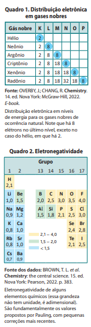
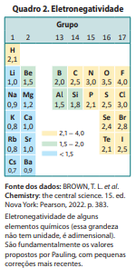

Ligações Iônicas
Uma substância muito usada pelo ser humano é o cloreto de sódio (principal componente do sal de cozinha), constituído pelos elementos químicos sódio e cloro. Consultando a tabela periódica disponível no Capítulo 3, temos:
| Átomo neutro | No de prótons | No de elétrons | Carga elétrica total |
|---|---|---|---|
| Sódio (Na) | 11 | 11 | 0 |
| Cloro (Cl) | 17 | 17 | 0 |
Existe grande diferença de eletronegatividade entre esses dois átomos; a do cloro é 3,0 e a do sódio é 0,9 (Quadro 2). O cloro atrai mais fortemente os elétrons do que o sódio e, como consequência, há transferência de um elétron do sódio para o cloro, e ambos passam a apresentar configuração eletrônica semelhante à de um gás nobre.
Quando átomos perdem ou recebem elétrons, eles deixam de ser eletricamente neutros e passam a ser íons. Um íon positivo é chamado de cátion e um íon negativo é denominado ânion. O cátion formado a partir do átomo de sódio é representado por Na+, o que indica a sua carga positiva. O ânion formado a partir do átomo de cloro é representado por Cl– , o que indica a sua carga negativa.
| Íon do elemento químico | No de prótons | No de elétrons | Carga elétrica total |
|---|---|---|---|
| Sódio (Na+) | 11 | 10 | +1 |
| Cloro (Cl–) | 17 | 18 | −1 |
Como os íons Na+ e Cl– possuem cargas de sinais opostos, atraem‑se mutuamente e mantêm‑se unidos. Essa união entre íons é chamada ligação iônica, que se deve à atração eletrostática entre cargas elétricas de sinais opostos. Cada cátion Na+ interage com os ânions Cl– que estiverem à sua volta e vice‑versa. No caso do NaCl, por exemplo, cada cátion e ânion interage mais fortemente com outros seis íons à sua volta, que estão mais próximos e têm carga de sinal oposto à sua, formando retículos cristalinos iônicos (Fig. 1). Essas estruturas constituem os sólidos iônicos.
Quanto maior a diferença de eletronegatividade entre átomos que interagem, maior a possibilidade de formarem íons. De modo geral, quando essa diferença é maior que 1,7, considerando dados da escala de Pauling, a ligação química tende a ser predominantemente iônica. No caso do NaCl, a diferença é de 2,1 (ou seja, 3,0 – 0,9).
A fórmula unitária de um composto iônico representa a proporção em números inteiros (os menores possíveis) dos cátions e ânions que constituem o retículo cristalino. Ela pode ser obtida por meio da fórmula eletrônica (ou fórmula de Lewis), na qual os símbolos dos elementos químicos dos respectivos átomos são indicados com os elétrons da sua camada de valência (nessa obra, eles serão representados simbolicamente por pequenos círculos), como mostrado a seguir.
O cloreto de sódio, composto de fórmula unitária NaCl, é um exemplo de composto iônico, ou seja, constituído de íons. Cada cristal de cloreto de sódio é formado por um retículo cristalino iônico, no qual há imensa quantidade de cátions Na+ e ânions Cl–.
De modo geral, uma ligação tem caráter predominantemente iônico quando se estabelece entre elementos químicos cuja diferença de eletronegatividade é acentuada, o que, na escala de Pauling, corresponde a uma diferença superior a 1,7. Embora haja exceções a esse critério, ele é útil para estabelecer previsões.

Gases nobres e regra do octeto
Todas as substâncias químicas são constituídas de átomos, e em praticamente todos os casos há combinação entre eles. São conhecidas apenas seis substâncias nas quais os átomos não estão unidos a outros – hélio, neônio, argônio, criptônio, xenônio e radônio – que são encontradas em baixíssima concentração na atmosfera terrestre. Esses gases são constituídos de átomos (não combinados) de elementos químicos do grupo 18 da tabela periódica, os gases nobres. O sétimo elemento desse grupo, oganessônio, Z= 118, não tem existência natural; apenas alguns átomos foram produzidos artificialmente.
Até hoje, não foi encontrada na natureza nenhuma substância em que átomos de gases nobres estejam combinados entre si ou com átomos de outros elementos. Já foram produzidas, em laboratório, algumas substâncias artificiais em que determinados gases nobres (especialmente o xenônio e o criptônio) se combinaram com átomos de outros elementos, embora essa combinação, em geral, exija condições experimentais drásticas, alcançáveis somente de forma artificial. Tais observações evidenciam que os átomos de gases nobres têm baixíssima tendência a se combinar com outros átomos.
Como as propriedades químicas dos elementos estão relacionadas com as distribuições eletrônicas nas camadas da eletrosfera, os cientistas propuseram que a estabilidade dos gases nobres poderia estar relacionada ao número de elétrons que os átomos desses elementos apresentam na camada eletrônica mais externa, também denominada camada de valência. O Quadro 1 mostra a distribuição eletrônica em níveis de energia (camadas) dos gases nobres.
Em 1916, o físico alemão Walther Kossel (1888‑1956), baseando‑se nas contribuições de outros cientistas, propôs haver relação entre ligação química e elétrons na última camada. O químico alemão Richard Wilhelm Heinrich Abegg (1869‑1910) foi o primeiro a registrar em trabalho impresso que os átomos poderiam passar por alterações a fim de adquirir oito elétrons na camada de valência. Mais tarde, a ideia foi retomada de forma independente pelos químicos estadunidenses Gilbert Newton Lewis (1875‑1946) e Irving Langmuir (1881‑1957); este último chamou essa relação de “octeto”. Hoje, ela é conhecida como regra do octeto e, de acordo com ela, os átomos das substâncias se combinam por meio das ligações químicas, de forma a adquirir a configuração eletrônica semelhante à de um gás nobre no estado fundamental. A regra do octeto é uma ferramenta útil para obter a fórmula química de alguns compostos, no entanto ela apresenta muitas exceções e não explica por que os átomos adquirem estabilidade ao se ligarem

Revisitando a Eletronegatividade
Ao dar continuidade aos estudos sobre a maneira como os átomos se ligam, o químico estadunidense Linus Pauling (1901 ‑1994) propôs, em 1931, a primeira escala quantitativa de uma propriedade chamada eletronegatividade. Entre as várias escalas de eletronegatividade já propostas, vamos considerar a de Pauling.
Para entender o conceito de eletronegatividade, é preciso considerar que a atração do núcleo sobre os elétrons de um átomo é de origem eletrostática. Assim como o núcleo de um átomo atrai os elétrons desse átomo, em uma liga‑ ção química ele também pode atrair os elétrons de outros átomos a ele ligados. Essa tendência de atração de elétrons está relacionada à eletronegatividade, grandeza que indica a intensidade com que um átomo ligado a outro atrai os elétrons envolvidos em uma ligação química.
A eletronegatividade depende de fatores como o número de prótons, pois, quanto maior esse número, mais elevada é a atração que o núcleo exerce sobre os elétrons. Ela também é influenciada pela distância dos elétrons em relação ao núcleo, já que elétrons das camadas mais próximas ao núcleo são atraídos mais fortemente que os elétrons das camadas mais externas. Observe, no Quadro 2, alguns valores de eletronegatividade.

Dialogando com o texto
Consulte a tabela periódica e procure nela os elementos químicos cujos símbolos são Li, K, Mg, Ca, Ba, Al, N, O, S, Br e I.
Qual é o gás nobre cujo número de elétrons é mais próximo do de cada um deles?
Quantos elétrons cada um desses elementos deve perder ou receber para obter a configuração de valência de um gás nobre? Se julgar necessário, para embasar sua decisão, consulte a distribuição eletrônica em camadas, no item 6 do Capítulo 3.
Caso os átomos desses elementos químicos estabeleçam ligações iônicas, qual é a carga dos íons formados após a perda ou o recebimento de elétrons?
Apresente as conclusões para o professor e debata com ele cada caso.